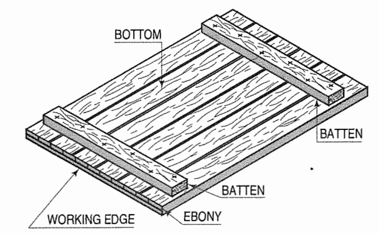
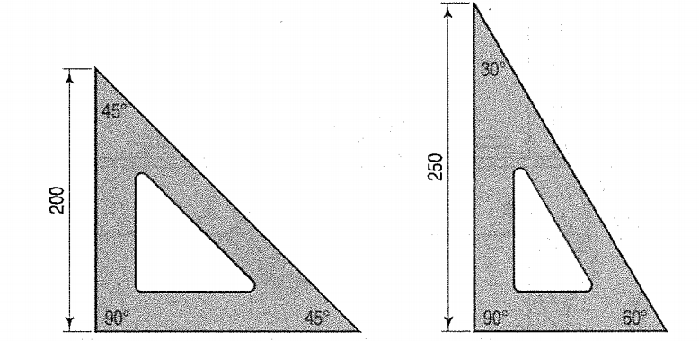
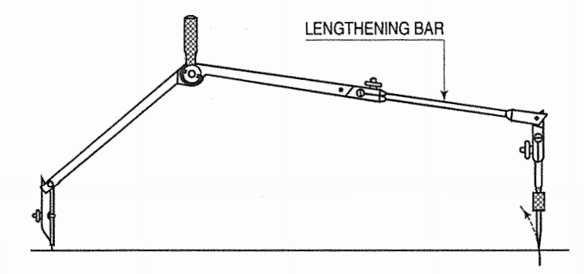
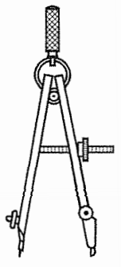
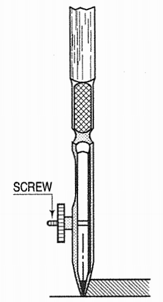
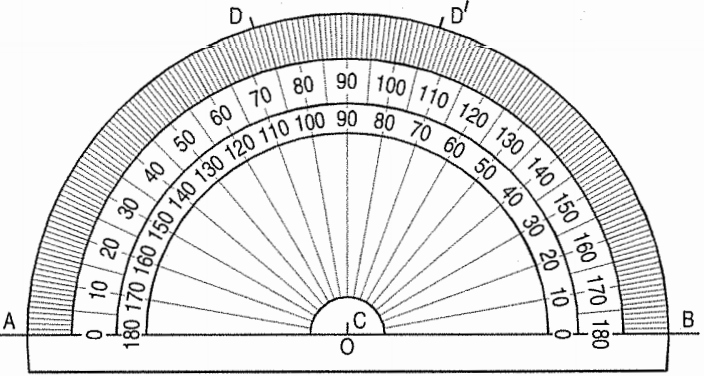
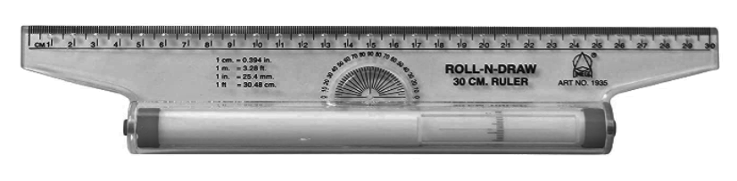
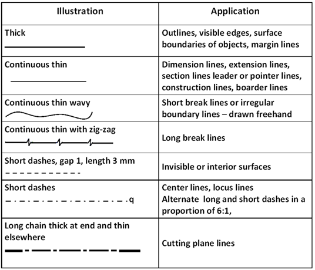
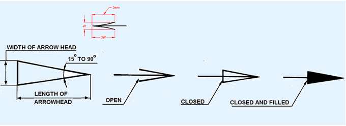
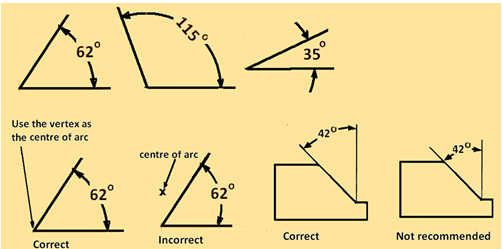

Introduction to Engineering Drawing
THEORY
Engineering Graphics is a technical way of communicating between engineers and designers. It shows physical representation of an object on a sheet of paper (A5, A4, A3, A2, A1 and A0) with detailed dimensions and properties which will lead to a finished product.
The drawing instuments required for a perfect technical drawings are listed below:
- Drawing Board
A drawing board is a wooden board where the paper is fixed upon, which is a convinient way to draw. A drawing board is shown in Fig 1. It comes in different sizes such as B0, B1, B2 and B3

Fig 1. Drawing Board
2. T- square
A T-square as shown in Fig 2, is made up of two pieces of hard quality wood, which is fastened at rigt angles to each other. Horizontal lines are drawn by using the working edge of the T-Square.

Fig 2. T-square
3. Set squares - 45o and 30o - 60o
A set square as shown in Fig 3, is used to darw vertical lines by taking the horizontal lines drawn by T-square as the reference. Set squares along with a scale can be used to draw parallel lines.

Fig 3. Set-Square
Drawing Instrument box containing:
i. Large-size compass with interchangable pencils and pens
Compasses as shown in Fig 4, are used in drawing circles and arcs of circles.
Fig 4. Large-size compass
ii. Lengthening bar
Circles measuring more than 150mm are drawn using a lengthening bar as shown in Fig 5.
Fig 5. Lengthening Bar
iii. Small bow compass
Circles and arcs measuring less than 25mm radius are drawn using a smll bow compass as shown in Fig 6.
Fig 6. Small bow compass
iv. Large size divider
Dividers as shown in Fig 7, with needle attachments, are used to divide lines and arcs into equal parts, transfer dimensions and to set off given distances from the scale to the drawing
Fig 7. Large Size divider
v. Small bow divider
A small bow divider is used to make minue divisions
vi. Small-bow ink pen It is used for drawing smal cicles and arcs in ink.
vii. Inking Pen An inking pen as shown in Fig 8, is used to draw srtaigh lines and non circular arc in ink
Fig 8. Inkng Pen
5. Scales
Scales as shown in Fig 9, helps in taking measurements accurately.

Fig 9. Scale
6. Protractor
A protractor as shown in Fig 10, helps in measuring and marking angles accurately.

Fig 10. A Protactor
7. French Curves
French curves as shown in Fig 11, are used to draw curves which cannot be drawn using a compass.

Fig 11. Frech Curves
8. Drawing Papers
Drawing papers are materials made up of fiberes which is used t odraw and write. These come in many sizes as shown in Fig 12.

Fig 12. Paper and it's diffrent size
9. Drawing Pencils
Quality of pencils used to draw makes the sketches more appealing. There are pencils of different hardness which are usually indicated by letters and numbers. HB refers to medium grade, 2H, 3H, 4H indicates incereasing hardness and 2B, 3B, 4B indicates softer grades. The lead may be sharpened in two different forms i.e conical point or chisel edge as shown in Fig 13.

Fig 13. Pencil and it's edges
10. Sand-Paper block
A sand paper block as shown in Fig 14, is used to sharpen pencils.

Fig 14. Sand-paper Block
11. Eraser
Erasers to used to erase mistakes made in pencil sketching.
12. Drawing Pins, clips or adhesive tapes
These are used to fix papers on to the drawing boards.
13. Duster
A duster is used to clean instruments before drawing.
14. Drafting Machines
A T-Square, Set-Square, scale and protractor is combined in a drafting machine as shown in Fig 15. One of it's end is clamped to the drawing board and the other end is an adjustable head which can be moved aroud on the sheet.

Fig 15. Drafting Machine
15. Roll-n-draw
A Roll-n-draw as shown in Fig 16, consists of a graduated roller which is used to draw parallel lines.

Fig 16. Roll-n-Draw
Instructions to draw border lines:
Mark points along the left-hand edge of the paper at required distances from the top and bottom edges and through them, draw horizontal lines with the T-square or by mini-drafter.
Along the upper horizontal line, mark two points at required distances from the left-hand and right-hand edges, and draw vertical lines through them by mini-drafter.
Erase the extra lengths of lines beyond the points of intersection.
One more horizontal line at about 10 mm to 20 mm from the bottom border line may also be drawn and the space divided into three blocks. A title block as shown in Fig 17 must be drawn in right-hand bottom corner above block-3; in which (a) name of the institution, (b) title of the drawing, and (c) name, class etc. of the student may be written.

Fig 17. Schematic representation of Border-Lines
RULES OF DIMENSIONING
Between any two extension lines, there must be one and only one dimension line bearing one dimension.
As far as possible, all the dimensions should be placed outside the views. Inside dimensions are preferred only if they are clearer and more easily readable.
All the dimensions on a drawing must be shown using either Aligned System or Unidirectional System. In no case should, the two systems be mixed on the same drawing.
The same unit of length should be used for all the dimensions on a drawing. The unit should not be written after each dimension, but a note mentioning the unit should be placed below the drawing.
Dimension lines should not cross each other. Dimension lines should also not cross any other lines of the object.
All dimensions must be given.
Each dimension should be given only once. No dimension should be redundant.
Do not use an outline or a centre line as a dimension line. A centre line may be extended to serve as an extension line.
Avoid dimensioning hidden lines.
For dimensions in series, adopt any one of the following ways.
Chain dimensioning (Continuous dimensioning) All the dimensions are aligned in such a way that an arrowhead of one dimension touches tip-to-tip the arrowhead of the adjacent dimension. The overall dimension is placed outside the other smaller dimensions.
Parallel dimensioning (Progressive dimensioning) All the dimensions are shown from a common reference line. Obviously, all these dimensions share a common extension line. This method is adopted when dimensions have to be established from a particular datum surface
Combined dimensioning. When both the methods, i.e., chain dimensioning and parallel dimensioning are used on the same drawing, the method of dimensioning is called combined dimensioning.
Lines
Lines is one important aspect of technical drawing. Lines are always used to
construct meaningful drawings. Various types of lines are used to construct
drawing, each line used in some specific sense. Lines are drawn following
standard conventions mentioned in BIS (SP46:2003). A line may be curved,
straight, continuous, segmented. It may be drawn as thin or thick. A few basic
types of lines widely used in drawings are shown in Table 1.

Geometric Construction
Drawing consists of construction of primitive geometric forms viz. points, lines and planes that serve a the building blocks for more complicated geometric shapes as shown in Fig 18, and defining the position of object in space.

Fig 18. Different types of Geometric Figures
The important elements of dimensioning consists of extension lines, leader line, arrows and dimensions.
Extension line A thin, solid line perpendicular to a dimension line,
indicating which feature is associated with the dimension. There should be a
visible gap of 1.5 mm between the features corners and the end of the extension
line.Fig 19 shows extension lines.
Leader line
A thin, solid line used to indicate the feature with which a dimension, note, or
symbol is associated. Generally this is a straight line drawn at an angle that
is neither horizontal nor vertical. Leader line is terminated with an arrow
touching the part or detail as shown in Figure 19. On the end opposite the arrow, the leader line will
have a short, horizontal shoulder. Text is extended from this shoulder such that
the text height is centered with the shoulder line

Fig 19. Leader Line and Extension Line
- Arrows should be 1/3rd as wide as they are long - symbols placed at the end of dimension lines to show the limits of the dimension. Arrows are uniform in size and style, regardless of the size of the drawing. Various types of arrows used for dimensioning is shown in Fig 20.

Fig 20. Types of arrows used for dimensioning
Dimensioning of angles: The normal convention for dimensioning of angles are illustrated in Fig 21.

Figure 21. Representation of Angles